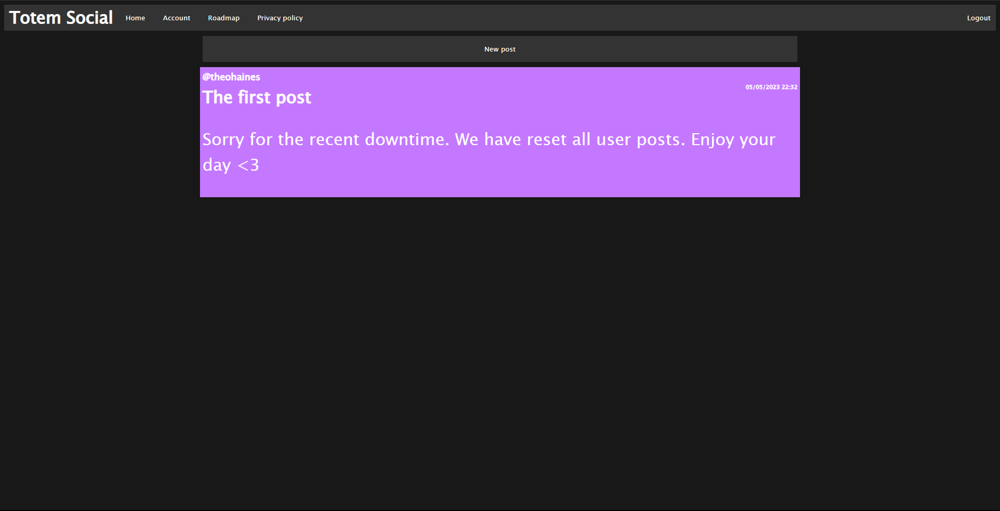
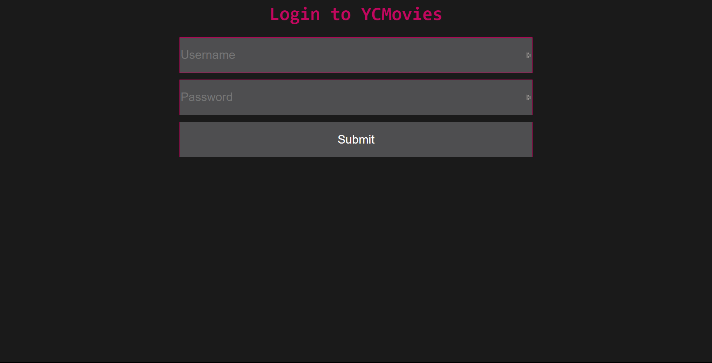
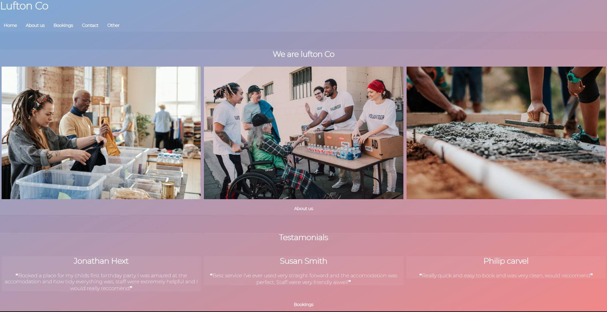

My portfolio
TotemSocial

TotemSocial is a joint project between me and a friend where we wanted to create a website where students could communicate freely and effectively.
It was a real challenge designing an interface that was easy to use but also had functionality. I wanted to use a dark mode interface because it puts
less strain on the users eyes and also looks more sleek and 'modern'. I personally worked on the front end of the site (The look of the website and how
the user interacts with it) as well as a limited part of the backend when needed. You can click This
link to visit the site!
YC-Movies

YC-Movies was the first joint project I worked on with my friend, we wanted to see how easy it would be to make a video streaming site, The project is mostly
abandoned now because it was mostly just a test to see how well we could make a site. Some of its core features was its invite only account system and the
ability to search for certain videos. Again I worked on the front end for this website and I decided on a pink and black theme to make it really stand out, my
main goal as the front end developer was to make the user experience as seemless as possible.
Lufton-Co

Lufton-co was a solo college project I had to work on for my BTEC computing course, we needed to make a website for the lufton town hall and advertise it as
a public space avaliable to hire. The website had a few design reqirements such as needing an about page, booking page, contact page and links to 3 other websites.
My favourite thing about this website was the gradient background, I think it still felt professional whilst giving the website some personality which I think
really makes it feel less corporate.